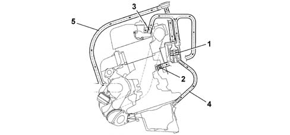
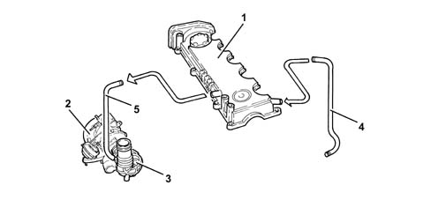

1080D CRANKCASE VAPOUR/GAS RECIRCULATION SYSTEM
- Path
- Descriptions > 10 ENGINE > 1080 EMISSION CONTROL SYSTEM > 1080D CRANKCASE VAPOUR/GAS RECIRCULATION SYSTEM
- Kind
- system description
- Applies to
- engines: 1.9 JTD 8v, 1.9 JTD 16v; all production periods
- Interactive page
- https://sloeber94.github.io/elrnDB-fCrm/en/#/194002386
Applies to: engines: 1.9 JTD 16v; all production periods
SPECIFICATIONS
Function
The oil vapour emissions are controlled by means of an oil separator (1) which collects the vapours coming from the crankcase (2) and from the tappet cover (3). The condensed vapours return to the sump, via a pipe, whilst the uncondensed vapours are sent, via a pipe (5) to the turbocharger air inlet hose.

1 - Oil separator
2 - Oil vapour outlet from the crankcase
3 - Oil vapour outlet from the tappet cover
4 - Condensed vapour sump return
5 - Inlet vapour delivery pipe
6 - Regulation valve
There is a regulation valve (6), on the inlet vapour delivery pipe (5), with a spring that in normal conditions acts on a diaphragm keeping it open, thereby allowing the flow of oil vapours coming from the oil separator.
When the vacuum inside the pipe (5) overcomes the calibration of spring, the diaphragm moves thereby closing the duct from the oil vapour separator preventing the intake of oil from the sump.
Applies to: engines: 1.9 JTD 8v; all production periods
SPECIFICATIONS
Function
The oil vapour emissions are controlled by the pipe (4) which collects the vapours escaping from the crankcase and the tappet cover (1) and ensures their partial condensation.
The vapours that are not condensed are sent, via the pipe (5), to the turbocharger air intake hose (3).

1 - Tappet cover
2 - Turbocharger
3 - Corrugated hose
4 - Oil vapour recovery pipe
5 - Oil vapour recirculation pipe
The regulation valve in the tappet cover that consists of a spring (1) and a diaphragm (2) allows the phenomenon of intake to be prevented.
When the vacuum values inside the tappet cover exceed a recommended limit, the diaphragm moves downwards sealing the duct from the crankcase.